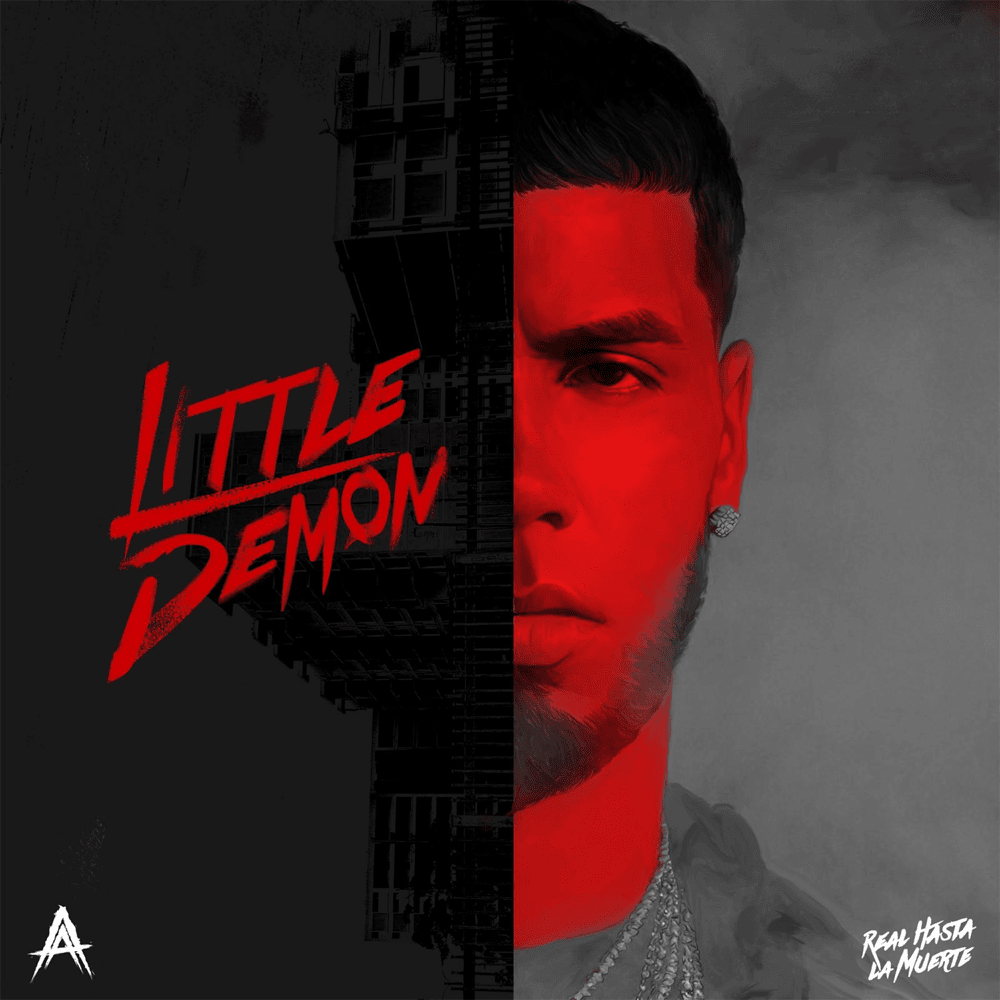
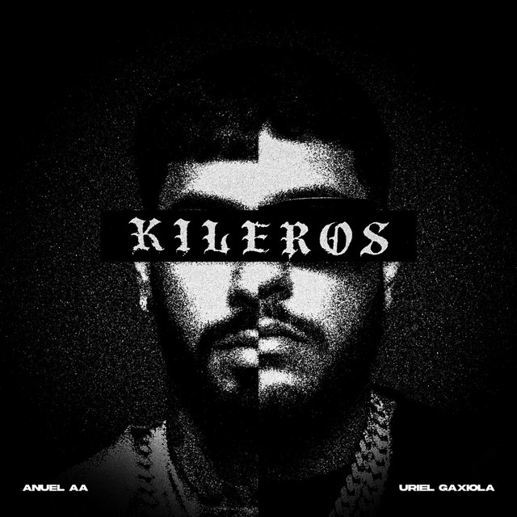

TATE QUIETA
Cuando te arrodillas tú me endiosas Me hiciste un amarre sin esposas Y te la mamo y dices que sientes las mariposas Cuando te ahorco dices que te apriete más Rompí esas paredes, llega al área estomacal
Solo quiero un threesome si te puedo duplicar Siempre que te vienes sabes que me vo'a enmusar Quisiera irme y dejártela adentro Pa' que tú me sientas como yo te siento Como yo te siento
Bebé que pasaría Si te caliento en esta noche fría Déjate llevar Bebé confía Dame esta noche que yo quiero hacerte mía Y el tiempo botaría Bien encerra'o haciendo fresquerías Déjate llevar Bebé confía Dame esta noche que yo quiero hacerte mía Siempre que me llamas te aplico la "tate quieta" Me enganché las percocet, hoy te hago venir dobleta Ma' dile a tu abuela que esta noche yo le vo'a romper la nieta Y te ries, hijaeputa, porque yo te rompo Cómo se supone Si no es conmigo yo te vo'a joder las relaciones Soy loco con cojone' El mejor que te lo pone Adicto a ese cuerpito, tus gemidos, tus facciones Ponerte en posiciones
La tengo fumando Ella está bien arrebatá Nunca dudes de mí sabes de lo que soy capaz No te veía hace tiempo má Te creció eso ahí atrás No puedes ser de nadie más Tú eres mía na' mas Te voy a hacer mía en tu casa escondía Te busco de noche y te entrego de día Le compré zapato y cartera Bajo pa'nde la amiguita, está lucía Ella sabe que yo soy un diablo Y conmigo asegurá las venias Te tengo en mi mente to' el tiempo Ese polvo nunca se me olvida Ese totito te pongo a gotear Le meto y conmigo se quiere quedar Me la trepo encima y no quiere bajar Si el gato me ronca yo lo voy a azotar Si no le contesto ella se desespera y le llega Pensando que Doble con otra puta se las pega La baby mama que tiene el stallion de Megan
Bebé que pasaría Si te caliento en esta noche fría Déjate llevar, bebé confía Que en esta noche quiero hacerte mía Y el tiempo botaría Bien encerra'o haciendo fresquerías Déjate llevar, bebé confía Dame esta noche que yo quiero hacerte mía Nuestra conexión es otra cosa Cuando te arrodillas tú me endiosas Me hiciste un amarre sin esposas Y te la mamo y dices que sientes las mariposas Cuando te ahorco dices que te apriete más Rompí esas paredes, llega al área estomacal Solo quiero un threesome si te puedo duplicar Siempre que te vienes sabes que me vo'a enmusar Quisiera irme y dejártela adentro Pa' que tú me sientas como yo te siento Como yo te siento Bebé que pasaría Si te caliento en esta noche fría Déjate llevar Bebé confía Dame esta noche que yo quiero hacerte mía Y el tiempo botaría Bien encerra'o haciendo fresquerías Déjate llevar Bebé confía Dame esta noche que yo quiero hacerte mía
¿Qué fue? Ma', tú sabe' que yo quiero contigo na' má' Sí, yo sé que hay mucha', pero tú ere' la que e' Peleamo' hace día', vamo' a verno' pa' chingar, ah Eh Qué rico es del principio al final Adentro 'e ti nos vamo' en un trance Pasión sin romance, tú ere' mía na' má' Eh Qué rico es del principio al final Adentro 'e ti nos vamo' en un trance Pasión sin romance, yo soy tuyo na' má'
Tú pelea' to' los día' Pero lo que a mí me gusta es que no importa lo que pase Tú ere' mía, me matchea' la energía Pichearía diez orgía', una noche con Rosalía Porque solo tú cumples mis fantasía' Tú te crees que estoy jodiendo, yo le pago al que te toque Te lo juro por Dios que lo mataría La vida por ti daría Y como Hércules con Hades por ti bajo pa'l infierno Yo sé que en el amor siempre te ha ido mal No has esta'o con un nigga real, pero si quiere', yo te enseño Mami, olvídate del pasado, que gracia' a eso Tú ere' el diamante que se formó bajo presión 'Taba buscando nuestro signo zodiacal Y dice que cuando se unen nadie puede con lo eterno Lo de nosotro' ya es eterno
Eh Qué rico es del principio al final Adentro 'e ti nos vamo' en un trance Pasión sin romance, tú ere' mía na' má' Eh Qué rico es del principio al final Adentro 'e ti nos vamo' en un trance Pasión sin romance, yo soy tuyo na' má' (oye) No deje' pa' ayer lo de hoy, si no existe mañana Que yo voy a lamberte, a romperte y hacerte mía Te lleno la luna en las noche' de tu cama 'Toy adentro, me lo pide', dale, yo te preñaría Bebé, tú ere' mi nena, mi puta, mi diablona ¿Quiere' un castillo? Te pongo la corona Yo te llevo pa' la montaña, bebé, como Mahoma Peleamo' pa' chingarno', eso se ha vuelto nuestro idioma Yo no soy tu Brad Pitt, lo que quiero es metértelo Te vo'a dar tu casti y chingando vo'a hacértelo Quiere cosas nasty, brincando, diciéndono' Que no nos amamo', aunque estamos mintiéndono' Yo te lo meto y tú te viene' complete Yo te hice el remix como ROA del jetski Me grita: "Suave, pero más duro, bebé, please" Tú te muere' cuando adentro yo te vacío el clip
Me manda' pa'l carajo, me busca', me deja' Si yo te lo he da'o to', no sé por qué te queja' Deja las excusa' y las pelea' pendeja' Si me vas a olvidar, ¿entonce' por qué no te aleja'? Oye, el 66, bebecita Con El Lobo La combi platina
En la calle estás metiendo presión (ah) Exclusiva, tú naciste pa mí (oye) Soy el titular de tu selección En la cama te hice mía, soy tu polvo MVP (tú sabe' que eres la única que me destruye)
Por eso vienes y te vas Tú siempre vas a volver Te quisiera duplicar Pa que chinguemo' los tres Por eso viene' y te va' Tú siempre va' a volver Te quisiera duplicar Pa que chinguemo' los tre' (dice así, dice así)
POR DEPORTE
Humilde y sencillo Pero desde los 20 soy millo Beso pa las babies, pa los pillo' gatillo Yo construí esto ladrillo a ladrillo El que durmió conmigo en el piso, duerme en mi castillo (mucha bareta) Sabía qué iba a ser desde pequeño Poniéndole empeño a todos mis sueños Orgullosamente soy antioqueño Por eso, en el Barrio Antioquia siempre me fumo un leño Soy un tesoro como en Pirata' del Caribe Yo voy subiendo y ustedes van en declive
TENDENCIA GLOBAL
… Myke Towers Junto al Bendito O-Ovy On The Drums Ovy On The Drums Myke Towers, baby, ey … ¿Qué más pues, bebé? Pasé a saludar Ya que no la he vuelto a ver Yo le di su lugar A vece' quiero volver No vaya' a dudar Uste' e' quien tiene el poder Dime ¿pa' dónde tú va'?, ey ¿Qué más pues, bebé? Pasé a saludar Ya que no la he vuelto a ver Yo le di su lugar A veces quiero volver No vaya' a dudar Uste' es quien tiene el poder Dime ¿pa' dónde tú va'?
NUEVA YORK
Pensando en ti, aunque somos tal para cual Yo no te leí, pero el corazón sí Y yo no voy a aceptar que me vayas a olvidar Si sé que muero por ti Con el corazón hecho mierda Pensando soy un cero a la izquierda (Pero sabe qué, mi amor) Y yo no quiero dejarte ir Y a Nueva York te vas sin mí, y yo sigo aquí Pegado a la botella, pidiendo a las estrellas Que no te dejen ir a otro lugar sin mí Porque en ti dejé huellas (No estoy tan Blessd sin ella) (usted sabe, mi amor)
YUNOGUARA
La vida se acaba, vivámosla hoy Si alguien te falla, mi amor, pa' ti estoy Tú eres mi queen, yo soy tu bad boy Y, mi amor, se lo juro que de aquí no me voy No sé qué hora de la noche sea Pero estoy afuera de tu casa esperando por ti Tú solo dime, mamacita, si me voy a dormir o vas a salir No sé qué hora de la noche sea Pero estoy afuera de tu casa esperando por ti Tú solo dime, mamacita, si me voy a dormir o vas a salir You already know-know-know-know-know Yo creo en ti con todo San Andrés Island Jamaica, you know what I'm saying? Money Makers Monja, don't got mercy on these niggas

LITTLE DEMON
Soy el dueño del palenque Cuatro letras van al frente Real hasta la muerte, ¿oíste, cabrón? Anuel

Mi little demon e' un loc- Mi little demon e' un loco (mi demon) Mis diablo' no se tiran foto' Ustede' no son como nosotro' (brr) Ustede' no son como nosotro' (como nosotro') Los poli en mi bolsillo, Coco Mi little demon e' un loco Mi little demon e' un loco (un loco) Mis diablo' no se tiran foto' Ustede' no son como nosotro' (como nosotro') Ustede' no son como nosotro' (como nosotro') Te tienen mojaíto' el toto (brr, ¿ah? La AA) Llamo a mi hermano Dios aborrece al vago, bo, levántate temprano (levántate temprano) Cuenta to' esa feria en la maleta 'e Milano (esa es Milano) Mamá, ahora estamo' haciendo business Con los mexicano' (con los mexicano', de Jalisco) De Guadalajara Tengo a la más rica en Instagram vestía' 'e Prada (vestía' 'e Prada) Les fumo a los poli en la cara (brr) Le dimo' cien millone' a la DEA pa' que los kilo' pasaran Por la frontera como si migraran (si migraran) Entrando en el jet pa' USA como si me extraditaran (extraditaran) Gilbert Arena, Ja Morant, la 34 Es Competition y patea como Haaland (brr, brr, brr).
Brr, escucha el Draco, cómo ladra (cómo ladra) Coge esos kilito', brother, despué' me los cuadra' (me los cuadra') Acuérdate que debe' aquello' do' de la chicharra (de la chicharra) Y quiero las cara' pa'rriba, las paca' me las amarra' Libra' y kilo', Felix Gallardo y Don Neto (Neto) Ahora son palo' los que colecciono Ya no son las Retro (ya no son las Retro) Bebecita, real que nada serio te prometo Si a la que ante' me pichaba ahora normal yo se lo meto (brr) Pero chao, baby, me tira' (me tira') Estoy en la mía poniendo a los mío' al día (mmm, mmm) Le metimo' y un trabajo se cayó, caímo' abajo Le metimo' el triple a otro, coronamo', 'tamo arriba ('tamo arriba) Dicen que lo bueno tarda (¿Ah?) Y desde que llegó mi momento, nada me falta (brr) Yo me jodí por esto, no fueron las carta' Ponme en voz alta Lo que te gastaste en to'a tu vida, cabrón, yo lo tengo en marca' Sube por el ascensor el SVJ Cabrón, tenemo' más punto' que la NBA (que en la NBA) Una libra y una Glock en el jet como Lil Wayne (brr) 'Toy con Trump borrando las cinco estrella' de GTA (brr)
Mi little demon e' un loc- Mi little demon e' un loco (mi demon) Mis diablo' no se tiran foto' Ustede' no son como nosotro' (brr) Ustede' no son como nosotro' (como nosotro') Los poli en mi bolsillo, Coco Mi little demon e' un loco
Mi little demon e' un loco (un loco) Mis diablo' no se tiran foto' Ustede' no son como nosotro' (como nosotro') Ustede' no son como nosotro' (como nosotro') Te tienen mojaíto' el toto (brr) Real hasta la muerte, ¿oíste, cabrón? Nely "El Arma Secreta" Anuel La DOBLEA